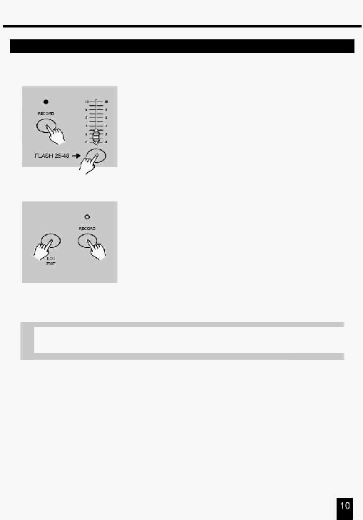

2. Опис інструкцій
2.1.3 Програмування сцен
7.
Натисніть кнопку Flash між 25-48, утримуючи кнопку
Запису (Record). Всі індикатори мигнуть, повідомляючи ,
що сцени запрограмовані в пам'яті.
8.
ВИ можете продовжити Програмування або вийти із
цього режиму.
Для виходу з режиму Програмування (Program)
натисніть кнопку Exit, утримуючи натиснутою кнопку
Запису (Record), при цьому згасне індикатор Record.
ПРИКЛАД: Запрограмуйте 16 кроків з повністю уведеними
каналами 1-32 у послідовність на кнопку Flash 25 сторінки
1.
Виконайте процедуру Дозвіл Запису.
2. Установіть повзунки Master A й B у максимальне положення й уведіть повзунок Fade.
3.
Виберіть Одиничний (Blind) 1-48 режим натисканням кнопки вибору режиму (Mode Select).
4. Установіть повзунок каналу 1 у верхнє положення, його індикатор світиться повною яскравістю.
5.
Натисніть кнопку Запису (Record) для програмування цього кроку в пам'яті.
6.
Повторіть кроки 4 й 5 доти, поки не будуть запрограмовані повзунки каналів 1-32.
7.
Натисніть кнопку (Page), при цьому засвітиться індикатор Page 1.
8.
Натисніть кнопку Flash 25 , утримуючи натиснутою кнопку Record, всі індикатори мигнуть,
указуючи, що цей крок запрограмований у пам'яті.